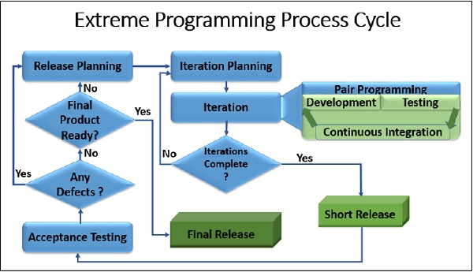

Tagasi
Mis on Extreme Programming (XP)?
Extreme Programming (XP) on üks tuntumaid agiilseid tarkvaraarenduse metoodikaid, mis keskendub tarkvara kvaliteedi parandamisele ja muutuvatele kliendinõudmistele reageerimisele. Selle looja on Kent Beck ning see põhineb viiel väärtusel: suhtlus, lihtsus, tagasiside, julgus ja austus. "Extreme" (äärmuslik) tuleneb ideest viia traditsioonilised head arenduspraktikad äärmuslikule tasemele (näiteks kui testimine on hea, testime kogu aeg).
Peamine fookus: XP eesmärk on vähendada muudatuste maksumust läbi lühikeste arendustsüklite ja pideva tagasiside.
XP arendustsüklid ja etapid
XP arendusprotsess on iteratiivne ja koosneb järgmistest korduvatest etappidest:
- Planeerimine (Planning): Kirjutatakse "kasutajalood" (User Stories), hinnatakse nende keerukust ja lepitakse kokku järgmise iteratsiooni sisu.
- Disain (Designing): Keskendutakse lihtsusele. Kasutatakse süsteemi metafoore ja CRC-kaarte (Class, Responsibilities, Collaborators). Reegel on: "Ära lisa funktsionaalsust enne, kui seda on vaja".
- Arendus (Coding): See on XP süda. Siia kuuluvad paaristöö (Pair Programming) ja ühine koodiomand. Kood peab vastama kokkulepitud standarditele.
- Testimine (Testing): Rakendatakse testpõhist arendust (TDD - Test-Driven Development). Enne koodi kirjutamist kirjutatakse test. Toimub pidev üksustestimine ja kliendi aktsepteerimistestimine.
- Kuulamine (Listening): Arendajad kuulavad klienti, et mõista ärivajadusi, ja annavad tagasisidet tehnilise teostatavuse kohta.
Kas XP-l on alamvariante?
XP ise on konkreetne raamistik, kuid sellel ei ole ametlikke "alamvariante" samamoodi nagu näiteks kosemudelil on V-mudel. Küll aga esineb XP-d praktikas peamiselt kahel kujul:
- Puhas XP: Kõigi 12 XP põhipraktika (nt paaristöö, TDD, pidev integratsioon) range järgimine.
- Hübriidmeetodid: Kõige tavalisem on Scrum + XP. Selles kombinatsioonis kasutatakse Scrumi projektijuhtimiseks (koosolekud, rollid, sprint) ja XP-d tehniliste praktikate jaoks (TDD, paaristöö, koodi refaktoreerimine).
Arendusmudeli joonis
Visuaalselt näeb mudel välja järgmine:

Arendusmudeli tähtsaim omadus: Tagasiside
XP tähtsaim omadus on pidev ja kiire tagasiside (Continuous Feedback).
Miks see on oluline? Tarkvaraarenduses on vead ja möödarääkimised seda kallimad, mida hiljem need avastatakse. XP-s saadakse tagasisidet:
- Sekunditega (paarisprogrammeerimine).
- Minutitega (üksustestid).
- Päevadega (kliendi ülevaatused).
- Nädalatega (iteratsiooni lõpp).
See tagab, et meeskond ehitab õiget asja ja teeb seda kvaliteetselt.
Heade ja Veade tabel
| Eelised (Head) |
Puudused (Vead) |
| Kõrge tarkvara kvaliteet tänu pidevale testimisele (TDD). |
Nõuab suurt ressurssi (paaristöö võib tunduda alguses kallis). |
| Väga paindlik – muudatused on teretulnud igal ajal. |
Vajab kliendi pidevat kohalolu ja kaasamõtlemist. |
| Vähendab arendajate stressi tänu realistlikele tähtaegadele. |
Raske rakendada suurtes, geograafiliselt hajutatud meeskondades. |
| Kood on selge ja kergesti hooldatav (refaktoreerimine). |
Dokumentatsiooni on vähe, rõhk on töötaval koodil. |
|
Loe lähemalt Agile Alliance lehelt
|
Viited ja allikad
Täna on 9. jaanuar 2026